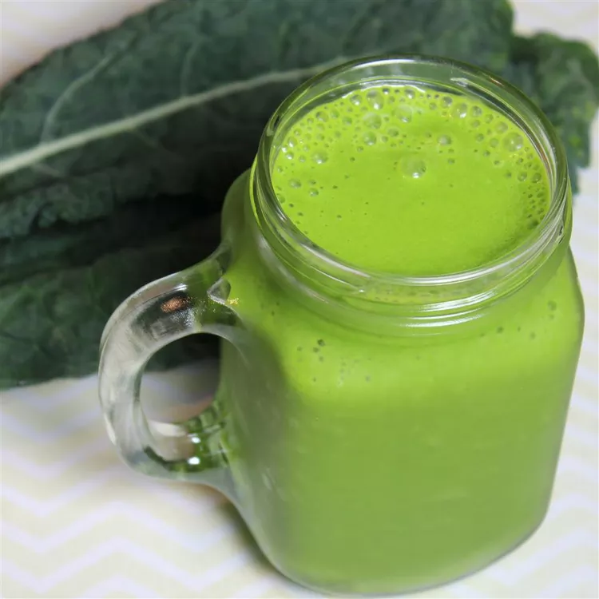

Home
Spinach and Kale Smoothie

Description
This versatile kale and spinach smoothie is a delicious way to add more veggies to your diet! Chia seeds are
optional but will give you added protein and energy.
Ingredients
- 2 cups fresh spinach
- 1 cup almond milk
- 1 leaf kale
- 1 tablespoon peanut butter
- 1 tablespoon chia seeds (Optional)
- 1 sliced frozen banana
Steps
- Combine spinach, almond milk, kale, peanut butter, and chia seeds in a blender; blend until smooth. Add
banana and blend until smooth.